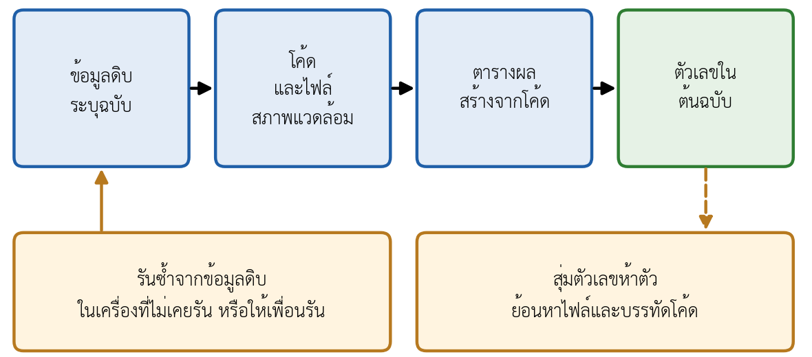
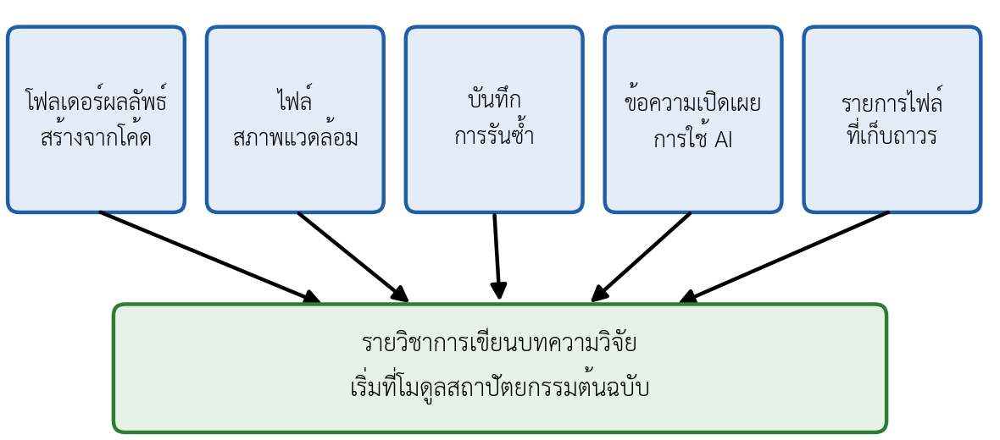

บทที่ 10 ใช้ AI ในงานวิจัยและส่งต่อไปเขียนต้นฉบับ
เมื่อศึกษาบทนี้จบแล้ว นิสิตสามารถ
- จัดทำตารางบันทึกการใช้ AI ของโครงการตนเองได้
- อธิบายเหตุผลที่ห้ามใช้คำตอบจาก LLM เป็นข้อมูลของงานวิจัยได้
- ระบุข้อมูลที่ห้ามนำเข้าเครื่องมือ AI ภายนอกในโครงการของตนได้
- เขียนข้อความเปิดเผยการใช้ AI จากตารางบันทึก ตามนโยบายของวารสารเป้าหมายได้
- รันการวิเคราะห์ทั้งหมดซ้ำจากข้อมูลดิบ และย้อนหาที่มาของตัวเลขในตารางผลได้ (ใบงานที่ 10)
ความนำ
บทนี้เป็นบทสุดท้าย และนิสิตทั้งสองแทร็กกลับมารวมกัน เนื้อหามีสองเรื่อง เรื่องแรกคือการใช้ AI ในงานวิจัย ซึ่งปรากฏในหลายบทก่อนหน้า เช่น การตรวจคำตอบจากบอทในบทที่ 5 และบทที่ 7 และการไม่นำไฟล์ข้อมูลที่จำกัดการใช้เข้าเครื่องมือ AI ในบทที่ 6 บทนี้รวมเรื่องเหล่านั้นเป็นแนวปฏิบัติเดียว เรื่องที่สองคือขั้นส่งต่อ ซึ่งทำให้ทุกตัวเลขในผลวิเคราะห์ย้อนหาที่มาได้และรันซ้ำได้ ก่อนนิสิตจะเริ่มเขียนต้นฉบับ
ผลของบทนี้เป็นข้อมูลนำเข้าของรายวิชาการเขียนบทความวิจัย ซึ่งเริ่มจากต้นฉบับที่มีผลวิเคราะห์พร้อมแล้ว
10.1 บันทึกการใช้ AI ตลอดกระบวนการวิจัย
ผู้เขียนเสนอให้นิสิตบันทึกการใช้ AI ทุกครั้งตั้งแต่บทที่ 1 ในตารางที่ 10.1 เพราะเมื่อถึงขั้นเขียนต้นฉบับ นิสิตจะจำไม่ได้ว่าใช้เครื่องมือใด ที่ขั้นใด และใช้ผลอย่างไร ตารางนี้ใช้สามงาน งานแรกคือเขียนข้อความเปิดเผยในหัวข้อ 10.4 งานที่สองคือตรวจว่าไม่ได้นำข้อมูลต้องห้ามเข้าเครื่องมือภายนอก จากช่องข้อมูลที่ป้อน งานที่สามคือแสดงว่านิสิตตรวจผลจาก AI เองก่อนใช้
ตารางที่ 10.1 บันทึกการใช้ AI (ผู้เขียนเสนอ)
| วันที่ | ขั้นหรือบท | เครื่องมือและรุ่น | ทำอะไร | ข้อมูลที่ป้อน | ใครตรวจผล อย่างไร | ใช้ผลในงานหรือไม่ |
|---|---|---|---|---|---|---|
| ... | บทที่ 5 | ... | หาข้อคำถามที่กำกวม | ร่างข้อคำถาม ไม่มีข้อมูลผู้ตอบ | ผู้วิจัยอ่านทุกข้อ แล้วทดลองใช้กับคน | ใช้บางข้อ |
ที่มา ผู้เขียนเสนอ
นิสิตที่เริ่มบันทึกช้า ให้เขียนย้อนหลังตามที่จำได้ และระบุว่าเป็นบันทึกย้อนหลัง เช่นเดียวกับบันทึกความรู้เดิมเกี่ยวกับข้อมูลในบทที่ 8
10.2 LLM แทนผู้ตอบไม่ได้
แนวคิดที่ใช้แบบจำลองภาษาขนาดใหญ่ (large language model หรือ LLM) ตอบแบบสอบถามแทนคนมีหลักฐานสองด้าน ด้านที่เห็นศักยภาพ Argyle และคณะ (2023, p. 337) เสนอแนวคิด algorithmic fidelity และกลุ่มตัวอย่างซิลิคอน (silicon samples) ซึ่งกำหนดภูมิหลังจากผู้ตอบจริงให้แบบจำลอง แต่ผู้เขียนเองระบุว่าต้องตรวจ algorithmic fidelity ในแต่ละโดเมนก่อนใช้แทนกลุ่มตัวอย่าง (Argyle et al., 2023, pp. 340–341, 349) ด้านที่เตือน Bisbee และคณะ (2024) พบว่าข้อมูลสังเคราะห์จาก ChatGPT ไม่น่าเชื่อถือสำหรับการอนุมานทางสถิติ และคำตอบมีการกระจายน้อยกว่าข้อมูลจริง
หลักฐานอีกกลุ่มมาจากแบบสอบถามออนไลน์ที่บทที่ 5 และบทที่ 7 กล่าวถึง Westwood (2025, บทคัดย่อ) สรุปว่าสมมติฐานพื้นฐานที่ว่าคำตอบที่สอดคล้องกันคือคำตอบของมนุษย์ใช้ไม่ได้แล้ว และเอเจนต์ AI อนุมานสมมติฐานของผู้วิจัยแล้วสร้างข้อมูลที่ยืนยันสมมติฐานได้ งานที่ต้องการความมั่นใจสูงจึงควรกลับไปใช้การรับสมัครที่ควบคุมได้ (Westwood, 2025, หัวข้อ 4)
ผู้เขียนเสนอข้อสรุปสำหรับนิสิตสองข้อ ข้อแรก ห้ามใช้คำตอบจาก LLM เป็นข้อมูลของงานวิจัย หรือเป็นผลทดลองใช้แบบสอบถาม ข้อสอง ใช้ LLM ช่วยหาข้อคำถามที่กำกวมก่อนทดลองใช้กับคนได้ และบันทึกในตารางที่ 10.1
10.3 ข้อมูลที่ห้ามนำเข้าเครื่องมือ AI ภายนอก และ AI ช่วยเขียนโค้ด
ผู้เขียนเสนอให้นิสิตไม่นำข้อมูลสามประเภทเข้าเครื่องมือ AI ภายนอก ได้แก่ ข้อมูลส่วนบุคคลของผู้ตอบ ข้อมูลภายใต้ข้อตกลงที่จำกัดการใช้หรือการส่งออก และต้นฉบับที่ได้รับมาประเมิน ภาพที่ 6.2 ในบทที่ 6 แสดงการแยกไฟล์ตามหลักนี้ และนโยบายของสำนักพิมพ์เรื่องผู้ประเมินกับเครื่องมือ AI ยังรอผู้สอนเติมแหล่งตามบทที่ 6
AI ช่วยเขียนโค้ดได้ ถ้าป้อนเฉพาะสิ่งที่ไม่ใช่ข้อมูลต้องห้าม เช่น ชื่อตัวแปร โครงสร้างตาราง และข้อมูลสมมติ ผู้เขียนเสนอเงื่อนไขสามข้อ ข้อแรก นิสิตต้องอธิบายได้ว่าโค้ดแต่ละส่วนทำอะไร ข้อสอง นิสิตรันซ้ำเองจากข้อมูลดิบแล้วได้ตัวเลขเดิมตามหัวข้อ 10.5 ข้อสาม บันทึกการใช้ในตารางที่ 10.1
10.4 การเปิดเผยการใช้ AI ตามนโยบายวารสาร
นโยบายการใช้ AI ต่างกันตามสำนักพิมพ์และเปลี่ยนบ่อย ตารางที่ 10.2 เปรียบเทียบนโยบายของสามสำนักพิมพ์ที่ผู้เขียนอ่านจากหน้าเว็บของสำนักพิมพ์ ระหว่างเตรียมส่งบทความวิจัยในปี 2569
ตารางที่ 10.2 นโยบายการใช้ AI ของสามสำนักพิมพ์
| ประเด็น | Taylor & Francis | Elsevier | Emerald |
|---|---|---|---|
| ช่วยขัดเกลาภาษา | ใช้ได้ | ใช้ได้ การตรวจไวยากรณ์และการสะกดพื้นฐานไม่ต้องเปิดเผย | ใช้ได้กับข้อความที่ผู้เขียนเขียนเอง |
| ช่วยร่างเนื้อหา | ห้ามสร้างข้อความหรือโค้ดโดยไม่ผ่านการแก้ไขอย่างเข้มงวด | ช่วยได้ แต่ต้องไม่แทนการตัดสินทางวิชาการและการมีส่วนทางปัญญาของผู้เขียน | ห้ามร่างส่วนใดของต้นฉบับ รวมถึงบทคัดย่อและการทบทวนวรรณกรรม |
| ช่วยเขียนโค้ด | ใช้ได้ | ใช้ได้ และรายงานละเอียดในส่วนวิธีวิจัย | ห้ามสร้างโค้ด แต่ขัดเกลาโค้ดได้ |
| ข้อมูลและผลวิจัย | ห้ามใช้ข้อมูลสังเคราะห์แทนข้อมูลที่ขาด | ภาพข้อมูลต้องได้จากข้อมูลด้วยวิธีที่ทำซ้ำได้ และรายงานในส่วนวิธีวิจัย | ห้ามสร้าง ดัดแปลง หรือรายงานข้อมูลและผลด้วย AI |
| การเปิดเผย | ชื่อเครื่องมือพร้อมรุ่น วิธีใช้ และเหตุผล | ส่วนแยกท้ายต้นฉบับก่อนเอกสารอ้างอิง ยืนยันว่าผู้เขียนตรวจผลและรับผิดชอบเนื้อหา | ในส่วนวิธีวิจัยและกิตติกรรมประกาศ ระบุเนื้อหาที่สร้างหรือแก้ ชื่อเครื่องมือ และรุ่น |
| AI เป็นผู้แต่ง | ไม่ได้ | ไม่ได้ | ไม่ได้ |
ที่มา สรุปจาก Taylor & Francis (n.d.) เข้าถึง 10 กรกฎาคม 2569 Elsevier (2026) ฉบับปรับปรุงมิถุนายน 2026 เข้าถึง 15 พฤศจิกายน 2569 และ Emerald Publishing (n.d.) เข้าถึง 9 พฤศจิกายน 2569
ตารางแสดงว่าสิ่งที่สำนักพิมพ์หนึ่งยอม อีกสำนักพิมพ์หนึ่งอาจห้าม ต้นฉบับที่ AI ช่วยร่างและเปิดเผยครบตามนโยบายของ Elsevier ยังไม่ผ่านนโยบายของ Emerald แม้จะเปิดเผยแล้ว เพราะ Emerald ไม่ยอมให้ AI ร่างส่วนใดของต้นฉบับ (Emerald Publishing, n.d.) ผู้เขียนเคยต้องเปลี่ยนวารสารเป้าหมายก่อนส่งด้วยเหตุนี้ นอกจากนี้ Taylor & Francis (n.d.) เตือนว่าวารสารบางฉบับอาจไม่ยอมให้ใช้ AI เกินการช่วยภาษา กฎของวารสารจึงอาจเข้มกว่ากฎของสำนักพิมพ์
ผู้เขียนเสนอขั้นตอนสี่ขั้น ขั้นแรก อ่านนโยบายของวารสารเป้าหมายและของสำนักพิมพ์ตั้งแต่เลือกวารสาร เพราะนโยบายอาจทำให้ต้องเปลี่ยนวิธีเขียนหรือเปลี่ยนวารสาร แล้วอ่านซ้ำในวันส่ง พร้อมบันทึกลิงก์และวันที่อ่าน ขั้นที่สอง เขียนข้อความเปิดเผยจากตารางที่ 10.1 แยกการช่วยภาษาออกจากการช่วยสร้างเนื้อหา ระบุชื่อเครื่องมือ รุ่น และผู้พัฒนา ขั้นที่สาม แยกการใช้ AI ในกระบวนการวิจัย เช่น การช่วยเขียนโค้ด ไปรายงานในส่วนวิธีวิจัย ตามที่ Elsevier (2026) กำหนด ขั้นที่สี่ เขียนประโยคยืนยันว่าผู้วิจัยตรวจผลทั้งหมด รวมถึงเอกสารอ้างอิงทุกรายการ และรับผิดชอบเนื้อหา ขั้นนี้ตรงกับที่ Elsevier (2026) ให้ยืนยันในข้อความเปิดเผย และสำนักพิมพ์ทั้งสามแห่งในตารางที่ 10.2 ไม่ยอมรับ AI เป็นผู้แต่ง
10.5 ทำให้ทุกตัวเลขย้อนหาที่มาได้และรันซ้ำได้
เป้าหมายของขั้นส่งต่อคือตัวเลขทุกตัวในต้นฉบับย้อนหาที่มาในโค้ดและข้อมูลได้ และนิสิตรันซ้ำเองได้ตัวเลขเดิม ภาพที่ 10.1 แสดงสายที่มาของตัวเลข และจุดตรวจที่ผู้เขียนเสนอ

ที่มา ผู้เขียนเสนอ
ผู้เขียนเสนอหลักปฏิบัติสี่ข้อ ข้อแรก ตารางผลสร้างจากโค้ด ไม่พิมพ์ตัวเลขเอง ข้อสอง บันทึกสภาพแวดล้อม ได้แก่ โปรแกรมและรุ่น และแพ็กเกจและรุ่น มาตรฐานการรายงาน SEM ก็กำหนดให้รายงานโปรแกรมพร้อมรุ่น (Hoyle & Isherwood, 2013, หัวข้อ Estimation) ข้อสาม รันทั้งหมดซ้ำจากข้อมูลดิบในเครื่องที่ไม่เคยรันมาก่อน หรือให้เพื่อนรัน แล้วเทียบตัวเลข ข้อสี่ สุ่มตัวเลขห้าตัวจากตารางผล แล้วย้อนหาไฟล์และบรรทัดโค้ดที่สร้างให้ได้ทุกตัว
ถ้าการรันซ้ำได้ตัวเลขต่างจากเดิม ผู้เขียนเสนอให้หาสาเหตุตามตารางที่ 10.3 ก่อนเลือกตัวเลขใดตัวเลขหนึ่ง
ตารางที่ 10.3 สาเหตุที่การรันซ้ำได้ตัวเลขต่างกัน (ผู้เขียนเสนอ)
| สาเหตุ | สิ่งที่ตรวจ | วิธีแก้ |
|---|---|---|
| ค่าตั้งต้นของการสุ่มไม่ได้กำหนด | การสุ่ม เช่น bootstrap การแบ่งข้อมูล หรือการประมาณค่าซ้ำ | กำหนดค่าตั้งต้นในโค้ด และบันทึกไว้ |
| รุ่นของโปรแกรมหรือแพ็กเกจต่างกัน | ไฟล์สภาพแวดล้อมของสองเครื่อง | บันทึกและล็อกรุ่น |
| ข้อมูลดิบคนละฉบับ | วันที่ดาวน์โหลด รุ่นของชุดข้อมูล และค่าแฮชของไฟล์ | ระบุฉบับของข้อมูลใน README |
| มีขั้นที่ทำด้วยมือ | ขั้นที่ไม่อยู่ในโค้ด เช่น แก้ค่าในตารางคำนวณ | ย้ายทุกขั้นเข้าโค้ด (Wilson et al., 2017, p. 5) |
| ลำดับการรันต่างกัน | สคริปต์ที่ต้องรันตามลำดับ | เขียนลำดับใน README หรือทำสคริปต์หลักที่รันทั้งหมด |
ที่มา ผู้เขียนเสนอ
10.6 เก็บถาวรและส่งต่อไปเขียนต้นฉบับ
นิสิตเก็บถาวรตามแผนจัดการข้อมูลในบทที่ 1 หลัก FAIR เน้นให้ข้อมูลค้นหาและนำกลับมาใช้ได้ ทั้งโดยบุคคลและโดยเครื่อง (Wilkinson et al., 2016, p. 1) นิสิตใช้หลักนี้ได้เท่าที่ข้อตกลงการใช้ข้อมูลยอม ถ้าข้อตกลงไม่ยอมให้วางข้อมูลในคลังสาธารณะ นิสิตยังเก็บโค้ด README และไฟล์สภาพแวดล้อมได้ ตามที่บทที่ 1 กล่าวไว้
ผู้เขียนเสนอให้ส่งต่อไปเขียนต้นฉบับเมื่อมีห้าสิ่ง ได้แก่ โฟลเดอร์ผลลัพธ์ที่สร้างจากโค้ด ไฟล์สภาพแวดล้อม บันทึกการรันซ้ำ ข้อความเปิดเผยการใช้ AI และรายการไฟล์ที่เก็บถาวร นิสิตนำห้าสิ่งนี้ไปใช้ในรายวิชาการเขียนบทความวิจัย ตั้งแต่โมดูลสถาปัตยกรรมต้นฉบับเป็นต้นไป
ภาพที่ 10.2 แสดงห้าสิ่งในชุดส่งต่อ

ที่มา ผู้เขียนเสนอ
LLM ยังใช้ในงานอื่นของการวิจัย เช่น การคัดกรองวรรณกรรมเพื่อทบทวนอย่างเป็นระบบ Khraisha และคณะ (2024, บทคัดย่อ) พบว่าความแม่นยำดิบของ GPT-4 ใกล้มนุษย์ แต่ถูกทำให้สูงเกินจริงโดยความบังเอิญและข้อมูลไม่สมดุล หลังปรับแล้ว การคัดกรองอยู่ระดับไม่มีถึงปานกลาง และผู้เขียนเตือนให้ระวังอย่างมาก ผู้เขียนเสนอให้ใช้ LLM ช่วยจัดลำดับหรือลดภาระได้ แต่คนตัดสินการคัดเข้าและคัดออกขั้นสุดท้าย
10.7 ข้อผิดพลาดที่พบบ่อย
ตารางที่ 10.4 ข้อผิดพลาดที่พบบ่อยและวิธีแก้
| ข้อผิดพลาด | ตัวอย่าง | วิธีแก้ |
|---|---|---|
| ไม่บันทึกการใช้ AI | เขียนข้อความเปิดเผยจากความจำตอนส่ง | บันทึกตามตารางที่ 10.1 ตั้งแต่บทที่ 1 |
| ใช้คำตอบจาก LLM เป็นข้อมูล | ให้ LLM ตอบแบบสอบถามแทนผู้ทดลองใช้ | ทดลองใช้กับคน (Argyle et al., 2023, pp. 340–341) |
| ป้อนข้อมูลต้องห้ามเข้าเครื่องมือภายนอก | วางไฟล์ข้อมูลรายบริษัทเพื่อให้ AI เขียนโค้ด | ป้อนเฉพาะชื่อตัวแปรและข้อมูลสมมติ |
| ใช้โค้ดจาก AI โดยไม่เข้าใจ | อธิบายไม่ได้ว่าขั้นใดตัดแถว | อ่านและอธิบายทุกส่วน แล้วรันซ้ำเอง |
| พิมพ์ตัวเลขในตารางผลเอง | คัดลอกจากหน้าจอผลไปพิมพ์ในตาราง | สร้างตารางจากโค้ด |
| ไม่บันทึกรุ่นของโปรแกรม | ผลเปลี่ยนเมื่อปรับรุ่นแพ็กเกจ | บันทึกไฟล์สภาพแวดล้อม (Hoyle & Isherwood, 2013, หัวข้อ Estimation) |
| เลือกตัวเลขเมื่อรันซ้ำได้ไม่ตรง | ใช้ตัวเลขเดิมเพราะตรงกับที่เขียนไว้ | หาสาเหตุตามตารางที่ 10.3 ก่อน |
ปริมใช้เครื่องมือ AI ช่วยหาข้อคำถามที่กำกวมและช่วยแก้ภาษาในบทที่ 2 ของวิทยานิพนธ์ แต่ไม่ได้จดว่าใช้เมื่อไรและใช้รุ่นใด
ธามใช้เครื่องมือ AI ช่วยเขียนโค้ดเตรียมข้อมูล โดยป้อนเฉพาะชื่อตัวแปรและข้อมูลสมมติ ไม่ป้อนข้อมูลรายบริษัท เมื่อเพื่อนของธามรันโค้ดซ้ำจากข้อมูลดิบ ค่าสัมประสิทธิ์หลักในตารางผลต่างจากต้นฉบับที่ทศนิยมตำแหน่งที่สอง
คำถามชวนคิด ปริมควรทำอย่างไรกับบันทึกการใช้ AI ที่ขาดไป และควรเปิดเผยการใช้สองแบบอย่างไร การใช้ AI ของธามเหมาะสมหรือไม่ และธามควรหาสาเหตุที่ตัวเลขต่างกันอย่างไรก่อนส่งต่อไปเขียนต้นฉบับ
เมื่อศึกษาบทนี้แล้ว นิสิตบันทึกการใช้ AI ทุกครั้งในตารางที่มีช่องข้อมูลที่ป้อนและผู้ตรวจผล นิสิตไม่ใช้คำตอบจาก LLM เป็นข้อมูลของงานวิจัย เพราะหลักฐานยังไม่สนับสนุน และไม่นำข้อมูลส่วนบุคคล ข้อมูลภายใต้ข้อตกลง หรือต้นฉบับที่ได้รับมาประเมิน เข้าเครื่องมือ AI ภายนอก นิสิตใช้ AI ช่วยเขียนโค้ดได้เมื่ออธิบายโค้ดได้และรันซ้ำเองได้ และเขียนข้อความเปิดเผยการใช้ AI ตามนโยบายของวารสารเป้าหมาย
ในขั้นส่งต่อ นิสิตสร้างตารางผลจากโค้ด บันทึกสภาพแวดล้อม รันซ้ำจากข้อมูลดิบ และย้อนหาที่มาของตัวเลขได้ทุกตัว เมื่อรันซ้ำได้ตัวเลขต่างกัน นิสิตหาสาเหตุก่อนเลือกตัวเลข และเก็บถาวรตามแผนจัดการข้อมูลเท่าที่ข้อตกลงยอม
รายวิชานี้เริ่มจากแผนจัดการข้อมูลในบทที่ 1 และจบที่ผลวิเคราะห์ที่ผู้อื่นตรวจย้อนและรันซ้ำได้ งานขั้นต่อไปคือการเขียนต้นฉบับในรายวิชาการเขียนบทความวิจัย
- แบบจำลองภาษาขนาดใหญ่ (large language model หรือ LLM)
- กลุ่มตัวอย่างซิลิคอน (silicon samples)
- algorithmic fidelity
- บันทึกการใช้ AI (AI use log)
- ข้อความเปิดเผยการใช้ AI (AI disclosure statement)
- ไฟล์สภาพแวดล้อม (environment file)
- ค่าตั้งต้นของการสุ่ม (random seed)
- การรันซ้ำ (rerun)
- หลัก FAIR (FAIR principles)
คำถามทบทวน
- จงอธิบายเหตุผลที่ต้องเริ่มบันทึกการใช้ AI ตั้งแต่บทที่ 1 และประโยชน์ของช่องข้อมูลที่ป้อน
- นิสิตคนหนึ่งเสนอให้ใช้ LLM ตอบแบบสอบถามแทนการทดลองใช้กับคน เพื่อประหยัดเวลา จงประเมินข้อเสนอนี้ด้วยหลักฐานในหัวข้อ 10.2
- จงระบุข้อมูลในโครงการของตนที่ห้ามนำเข้าเครื่องมือ AI ภายนอก และสิ่งที่ป้อนได้เมื่อให้ AI ช่วยเขียนโค้ด
- จงเขียนข้อความเปิดเผยการใช้ AI จากตารางบันทึกของตนเอง โดยแยกการใช้ช่วยภาษาออกจากการใช้สร้างเนื้อหา
- การรันซ้ำได้ตัวเลขต่างจากต้นฉบับ จงเสนอลำดับการหาสาเหตุ และอธิบายว่าเหตุใดจึงไม่ควรเลือกตัวเลขเดิมทันที
ใบงานที่ 10 ชุดส่งต่อไปเขียนต้นฉบับ
ให้นิสิตทั้งสองแทร็กจัดทำชุดส่งต่อสำหรับโครงการวิจัยของตนเอง
- ตารางบันทึกการใช้ AI ตามตารางที่ 10.1 ตั้งแต่บทที่ 1 ระบุรายการที่เขียนย้อนหลัง
- ข้อความเปิดเผยการใช้ AI ตามนโยบายของวารสารเป้าหมาย พร้อมลิงก์และวันที่เข้าถึงนโยบาย
- โฟลเดอร์ผลลัพธ์ที่สร้างจากโค้ด และไฟล์สภาพแวดล้อม
- บันทึกการรันซ้ำ ระบุวันที่ ผู้รัน และตัวเลขตรงหรือไม่ ถ้าไม่ตรง ระบุสาเหตุตามตารางที่ 10.3 และวิธีแก้
- ตัวเลขห้าตัวที่สุ่มจากตารางผล พร้อมไฟล์และบรรทัดโค้ดที่สร้างแต่ละตัว
- รายการไฟล์ที่เก็บถาวร และไฟล์ที่เก็บไม่ได้เพราะข้อตกลงการใช้ข้อมูล
เอกสารอ้างอิง
วราวุฒิ นาคบุญนำ. (2569). บทที่ 10 ใช้ AI ในงานวิจัยและส่งต่อไปเขียนต้นฉบับ. ใน เริ่มต้นทำวิจัย จากคำถามถึงชุดข้อมูลที่วิเคราะห์ได้. คณะการบัญชีและการจัดการ มหาวิทยาลัยมหาสารคาม. https://aj-warawut.github.io/academic-web-teaching/rs_lesson_10.html